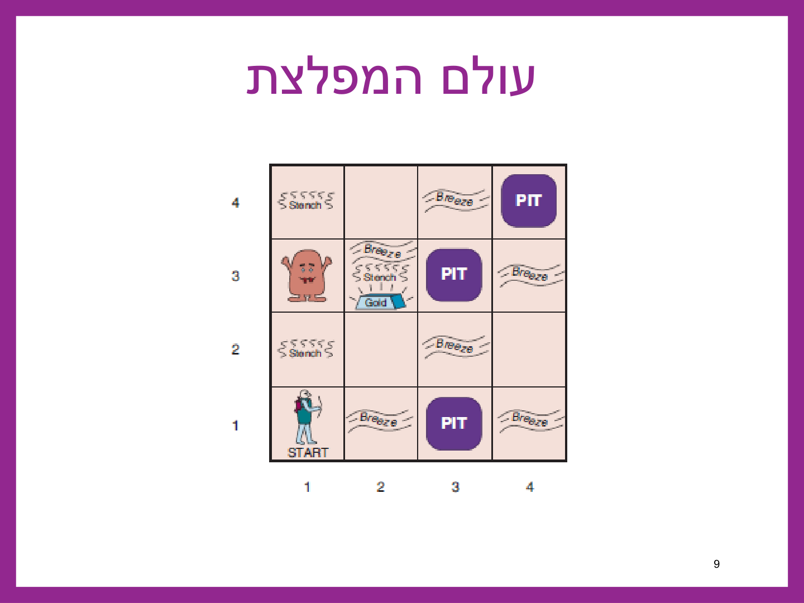
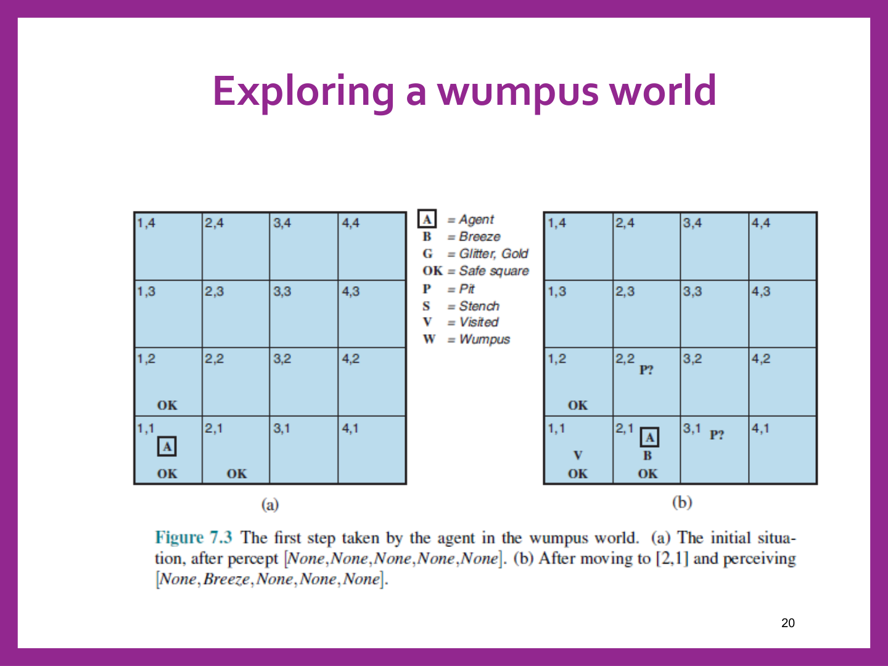
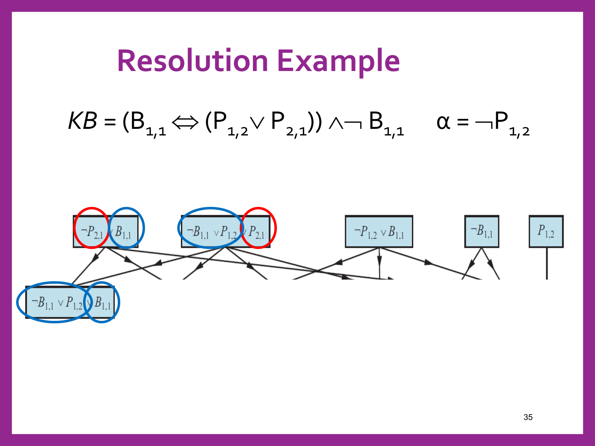
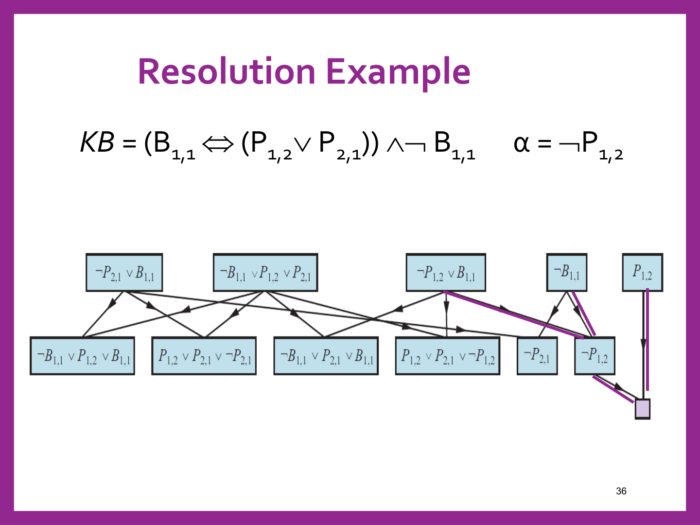
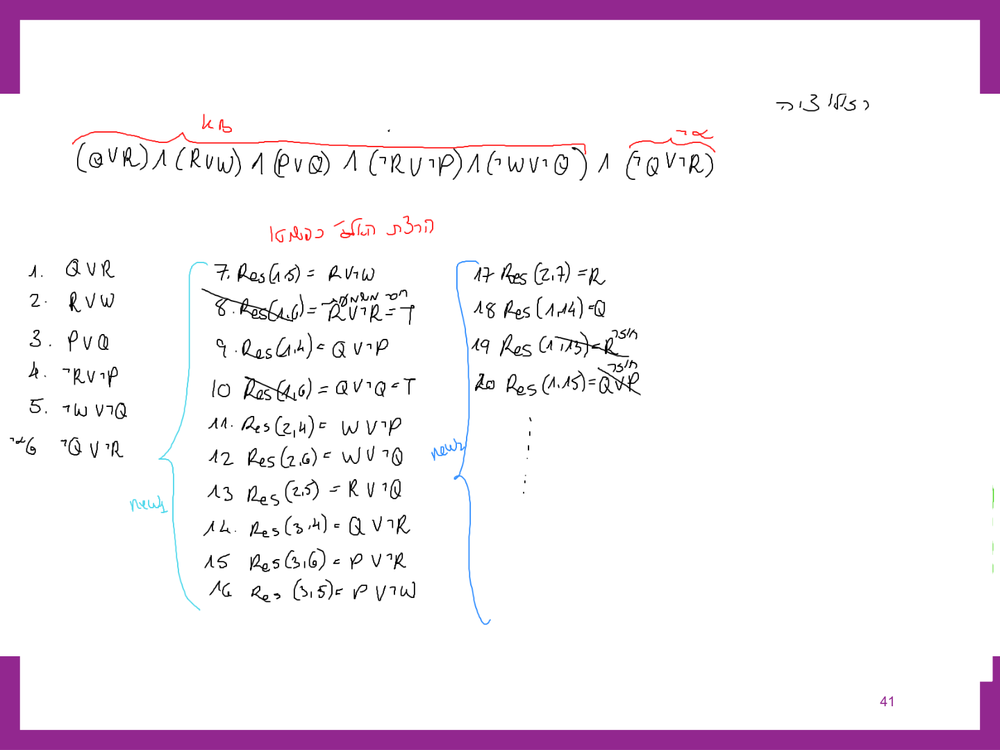
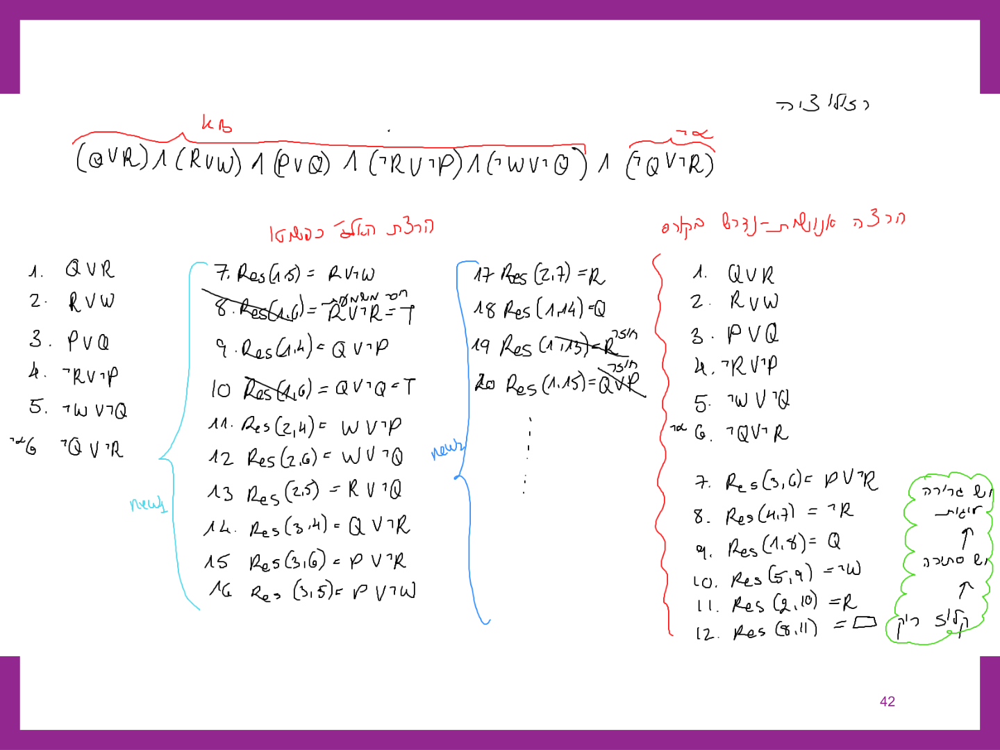
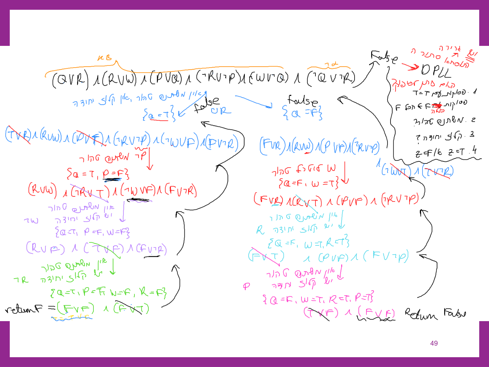

היסק בלוגיקה פסוקית — רזולוציה ושרשור
⏱ זמן משוער: 60 דק'
0. האינטואיציה — מ"מה שאני יודע" ל"מה שאני יכול להוכיח"
ביחידה הקודמת בנינו את השפה: תחביר הלוגיקה הפסוקית, טבלאות אמת, שקילויות לוגיות, ואת המושגים הסטטיים — גרירה (KB ⊨ α), תוקף וסיפוק. אבל שפה בלי מנוע היסק היא רק ייצוג. אנחנו רוצים סוכן שבאמת מסיק עובדות חדשות מתוך מה שהוא כבר יודע — וזו בדיוק המשימה של הפרק הזה: לתרגם את "מה שאני יודע (KB) גורר את מה שאני רוצה להוכיח (α)" לתהליך מכני, שרץ שורה אחר שורה בלי צורך "להבין" משהו.
נזכיר את זירת הדוגמה שנלווה אליה לאורך הפרק — עולם המפלצת (Wumpus World): לוח 4×4, בור אחד לפחות, מפלצת אחת, זהב אחד; משבצת עם בור משרה Breeze על שכנותיה, ומשבצת ליד המפלצת משרה Stench.

הסוכן זז ב-[1,1] → [2,1] → [1,2] → [2,2] → [2,3], וכל צעד מוסיף percepts חדשים ל-KB שלו — עד שהוא בטוח שיש מפלצת ב-[1,3] ובור ב-[3,1], אבל עדיין לא בטוח לגבי [2,2] ו-[3,3].


השאלה שנשארה פתוחה: האם יש בור ב-[1,2]? אינטואיטיבית — לא, כי אם היה בור שם היינו מצפים ל-Breeze ב-[1,1], ולא היה. אבל "אינטואיטיבית" זה לא מספיק להוכחה — אנחנו רוצים הליך מכני שמראה את זה. זה בדיוק מה שרזולוציה עושה, וזו הדוגמה שנלווה אליה בהמשך הפרק.
מקור: 12-propositional-logic.pdf (עמ' 9–13)
1. חוקי היסק והמרה ל-CNF — ארבעת הצעדים
חוק היסק (inference rule) הוא תבנית שמאפשרת לגזור משפט חדש ממשפטים קיימים. הדוגמה הכי פשוטה היא And-Elimination: אם נתון A ∧ B אמת, מותר להסיק את A (או את B) בנפרד:
B ∧ A ————— B
למעשה — כל שקילות לוגית יכולה לשמש כחוק היסק. אבל כדי שנוכל להפעיל את חוק ההיסק החשוב ביותר בפרק הזה, רזולוציה, המשפטים חייבים קודם להיות בצורת CNF (Conjunctive Normal Form — צירוף (∧) של קלוזים, וכל קלוז הוא דיסיונקציה (∨) של ליטרלים). לכן לפני הכל — תרגום.
ארבעת הצעדים, בסדר קבוע (מילה במילה מהמקור):
- Replace α ⇔ β with (α ⇒ β) ∧ (β ⇒ α) — ביטול דו-כיווניות.
- Replace α ⇒ β with ¬α ∨ β — ביטול גרירה.
- Move ¬ inwards using De Morgan's rules — דחיפת השלילה פנימה.
- Apply distributivity law (∧ over ∨) and flatten — פילוג ושיטוח.
דוגמה מלאה, שורה אחר שורה (חוק העולם B1,1 ⇔ (P1,2 ∨ P2,1) — "יש בריזה ב-[1,1] אמ"ם יש בור ב-[1,2] או ב-[2,1]"):
1. ביטול ⇔: (B1,1 ⇒ (P1,2 ∨ P2,1)) ∧ ((P1,2 ∨ P2,1) ⇒ B1,1) 2. ביטול ⇒ (בשני האגפים): (¬B1,1 ∨ P1,2 ∨ P2,1) ∧ (¬(P1,2 ∨ P2,1) ∨ B1,1) 3. דה-מורגן (דוחפים ¬ פנימה באגף הימני): (¬B1,1 ∨ P1,2 ∨ P2,1) ∧ ((¬P1,2 ∧ ¬P2,1) ∨ B1,1) 4. פילוג ∧ על ∨ ושיטוח: (¬B1,1 ∨ P1,2 ∨ P2,1) ∧ (¬P1,2 ∨ B1,1) ∧ (¬P2,1 ∨ B1,1)
התוצאה — שלושה קלוזים בצמוד (∧), מוכנים לרזולוציה. שימו לב שהקלוז הראשון עדיין מכיל שלושה ליטרלים; זה תקין — קלוז יכול להכיל כל מספר ליטרלים, העיקר שאין בו ∧ פנימי.
מקור: 12-propositional-logic.pdf (עמ' 21, 24–26)
2. כלל הרזולוציה (Resolution Inference Rule)
רזולוציה היא חוק ההיסק שפועל אך ורק על קלוזים ב-CNF. נתונים שני קלוזים אמת:
l1 ∨ … ∨ lk = T m1 ∨ … ∨ mn = T ──────────────────────────────────────── l1 ∨…∨ l(i-1) ∨ l(i+1) ∨…∨ lk ∨ m1 ∨…∨ m(j-1) ∨ m(j+1) ∨…∨ mn = T
כאשר lᵢ ו-mⱼ הם ליטרלים משלימים (אחד חיובי, השני שלילי של אותו משתנה) — הזוג מושמט ושארית שני הקלוזים מתאחדת לקלוז חדש (הרזולבנט).
דוגמה מזירת עולם המפלצת: אם ידוע P1,3 ∨ P2,2 (יש בור ב-[1,3] או ב-[2,2]) וגם ¬P2,2 ∨ W2,2 (אם אין בור ב-[2,2] אז יש מפלצת שם) — הרזולוציה על הזוג המשלים P2,2 / ¬P2,2 נותנת:
P1,3 ∨ P2,2 , ¬P2,2 ∨ W2,2
———————————————————————————————
P1,3 ∨ W2,2
המסקנה המעשית: כדי להוכיח KB ⊨ α, מוסיפים את ¬α ל-KB (בצורת CNF), ומריצים רזולוציה על כל הקלוזים שוב ושוב — עד שמגיעים לקלוז ריק (□), שמשמעותו סתירה. קלוז ריק = אין אף ליטרל שיכול להיות אמת = False.
מקור: 12-propositional-logic.pdf (עמ' 22–23)
3. הוכחה בסתירה (Resolution Refutation) — הגזירה המלאה
נחזור ל-B1,1 ⇔ (P1,2 ∨ P2,1) ולשאלה מסעיף 0: האם ¬P1,2 (אין בור ב-[1,2]) נגזר מ-KB = (B1,1 ⇔ (P1,2 ∨ P2,1)) ∧ ¬B1,1 (ידוע: אין בריזה ב-[1,1])? נוסיף את ¬α — כלומר P1,2 — ונקבל חמישה קלוזים:
1. ¬P2,1 ∨ B1,1 (מה-CNF של סעיף 1) 2. ¬B1,1 ∨ P1,2 ∨ P2,1 (מה-CNF של סעיף 1) 3. ¬P1,2 ∨ B1,1 (מה-CNF של סעיף 1) 4. ¬B1,1 (ידוע מהתצפית) 5. P1,2 (= ¬α, שלילת המסקנה)

אם מריצים רזולוציה על כל הזוגות (כפי שהאלגוריתם עושה בפועל), מתקבלים גם כמה קלוזים חסרי תועלת (טאוטולוגיות) — אבל יש גם מסלול קצר ומנצח:
Res(3,4): (¬P1,2 ∨ B1,1) + ¬B1,1 ⟶ ¬P1,2 Res(¬P1,2, 5): ¬P1,2 + P1,2 ⟶ □ (קלוז ריק!)

אלגוריתם הרזולוציה (מילה במילה מהמקור):
PL-Resolution(KB, α)
{
clauses = the set of clauses in CNF of KB Λ ¬α
new = { }
Do
{ for each Ci, Cj in clauses do
{ resolvents = PL-Resolve(Ci, Cj)
If resolvents contains the empty clause
return True (יש גרירה לוגית)
new = new U resolvents
}
if new is included in clauses
return false (האלגוריתם נכשל)
clauses = clauses U new
}
}
כלומר: מריצים רזולוציה על כל זוגות הקלוזים; אם מתקבל קלוז ריק — יש גרירה (True); אם עוברים סבב שלם בלי לייצר אף קלוז חדש (new כבר מוכל ב-clauses) — האלגוריתם נכשל (אין גרירה, False).
מקור: 12-propositional-logic.pdf (עמ' 24, 27–29)
4. דוגמה בסגנון מבחן — "הוכיחו שקובי מהיר וגם רחל מהירה"
זו בדיוק הדוגמה שהמרצה נתנה בכיתה, ובדיוק בסגנון הזה מגיעות שאלות רזולוציה במבחן האמיתי (למשל "הוכיחו שרון הלך לגלוש בסקי"). נתון בסיס הידע:
- קובי מהיר או רחל מהירה — (Q ∨ R)
- רחל מהירה או וויל מהיר — (R ∨ W)
- פרח מהירה או קובי מהיר — (P ∨ Q)
- רחל לא מהירה או שפרח לא מהירה — (¬R ∨ ¬P)
- וויל לא מהיר או שקובי לא מהיר — (¬W ∨ ¬Q)
המשימה: הוכיחו באמצעות אלגוריתם הרזולוציה ש-α = Q ∧ R (קובי מהיר וגם רחל מהירה) נגזר מה-KB.
הרצה נאיבית (מריצים רזולוציה על כל זוג קלוזים, ללא בחירה חכמה) מייצרת המון קלוזים — כולל טאוטולוגיות חסרות משמעות (למשל R ∨ ¬R) וכפילויות:

הרצה מכוונת-מטרה (בוחרים בכל צעד את הזוג הרלוונטי) מגיעה לקלוז הריק ב-6 צעדים בלבד:
1. Q ∨ R 2. R ∨ W 3. P ∨ Q 4. ¬R ∨ ¬P 5. ¬W ∨ ¬Q 6. ¬Q ∨ ¬R (= ¬α) 7. Res(3,6) = P ∨ ¬R (מ-3 ו-6, על Q/¬Q) 8. Res(4,7) = ¬R (מ-4 ו-7, על P/¬P) 9. Res(1,8) = Q (מ-1 ו-8, על R/¬R) 10. Res(5,9) = ¬W (מ-5 ו-9, על Q/¬Q) 11. Res(2,10) = R (מ-2 ו-10, על W/¬W) 12. Res(8,11) = □ (מ-8 ו-11, על R/¬R — קלוז ריק!)

מקור: 12-propositional-logic.pdf (עמ' 30–34)
5. מבט קדימה — Horn Clauses ושרשור
6. אלגוריתם DPLL — בדיקת ספיקות במקום היסק ישיר
DPLL ניגש לבעיה מזווית אחרת: במקום לגזור קלוזים חדשים כמו רזולוציה, הוא מנסה למצוא השמה (model) שמספקת את הנוסחה ב-CNF — ממש כמו סיפוק אילוצים (CSP). ומכיוון שהוא בודק ספיקות (satisfiability) ולא גרירה ישירות, יש להפעיל אותו על KB ∧ ¬α ולהפוך את התשובה:
שלושת השיפורים על חיפוש brute-force (זהים ברוח לשיפורי CSP):
- ליטרל טהור (pure symbol) — משתנה שמופיע תמיד באותו סימן בכל הקלוזים שטרם סופקו; אפשר להציב לו את הערך שמספק אותו, בלי לפצל.
- קלוז יחידה (unit clause) — קלוז עם ליטרל בודד שנותר לא-מוכרע; חייבים להציב לו את הערך שמספק אותו כדי שהקלוז לא ייכשל.
- סיום מהיר — קלוז הוא T ברגע שליטרל אחד בו T; המשפט כולו F ברגע שקלוז אחד בו F.
הפסאודו-קוד (מילה במילה מהמקור) — שימו לב לסדר הבדיקות:
DPLL(clauses, symbols, model)
{ if every clause in clauses is true , return true
if some clause in clauses is false, return false
For every clause in clauses, if it includes a literal=T
remove clause from clauses
X, value = FindPureSymbol(symbols, clauses, model)
If X ≠ null
return DPLL(clauses, symbols-X, model ∪ {X =value})
Y, value = FindUnitClause( clauses, model)
If Y ≠ null
return DPLL(clauses, symbols-Y, model ∪ {Y =value})
Z = First(symbols)
return DPLL(clauses, symbols-Z, model ∪ {Z =T}) or
DPLL(clauses, symbols-Z, model ∪ {Z =F})
}
סדר קבוע: קלוזים מוכרעים ← ליטרל טהור ← קלוז יחידה ← ורק אז פיצול על משתנה כלשהו (עם אפשרות ל-backtracking לערך השני אם הענף הראשון נכשל).
ניתוח מלא על אותה דוגמה בדיוק (KB של קובי/רחל/וויל/פרח, הוכחת α = Q ∧ R): מריצים DPLL על KB ∧ ¬α:
(Q∨R) ∧ (R∨W) ∧ (P∨Q) ∧ (¬R∨¬P) ∧ (¬W∨¬Q) ∧ (¬Q∨¬R)
אין ליטרל טהור ואין קלוז יחידה בשורש — מפצלים על Q:
ענף שמאלי {Q=T}: נמחקים הקלוזים שמכילים T (Q∨R ו-P∨Q). נותר ליטרל טהור ¬P ⟹ P=F. מקבלים קלוז יחידה ¬W ⟹ W=F. מקבלים קלוז יחידה ¬R ⟹ R=F. מתקבל (F∨F) = F — הענף מחזיר False.
ענף ימני {Q=F}: נמחקים קלוזים עם T. נותר ליטרל טהור W ⟹ W=T. מקבלים קלוז יחידה R ⟹ R=T. מקבלים קלוז יחידה P ⟹ P=T. מתקבל (F∨F) = F — גם הענף הזה מחזיר False.

מקור: 12-propositional-logic.pdf (עמ' 36–41)
7. WalkSAT — חיפוש מקומי לא-שלם לבדיקת ספיקות
WalkSAT הוא חיפוש מקומי (כמו hill-climbing או min-conflicts שראינו ב-CSP): מתחיל מהשמה מלאה אקראית, ובכל צעד בוחר קלוז שקרי אקראי ומשנה (flip) משתנה אחד בו — בהסתברות p משתנה אקראי מהקלוז, אחרת המשתנה שממקסם את מספר הקלוזים המסופקים (min-conflicts).
WalkSat(clauses, p, max-flips)
{ model = a random assignment of T/F to the symbols in clauses
for i = 1 to max-flip
{ if model satisfies clauses
return model
clause = a randomly selected clause from clauses that is
false in model
If Random(0,1) < p
flip the value in model of a randomly selected symbol
from clause
else flip whichever symbol in clause maximizes the
number of satisfied clauses }
return failure
}
מקור: 12-propositional-logic.pdf (עמ' 42–45)
8. השוואה ומלכודות למבחן
| שיטה | שלמה? | מוכיחה גרירה איך | הערה |
|---|---|---|---|
| רזולוציה | כן | מגיעה לקלוז ריק ⟸ סתירה | עובדת על כל קלוז, לא רק Horn |
| DPLL | כן | מחזירה False על KB∧¬α | לא תמיד מהירה יותר מרזולוציה! |
| WalkSAT | לא | מציאת מודל ⟸ אין גרירה | אי-מציאה אינה מוכיחה דבר |
9. תרגיל הבית — תרגיל 8
תרגיל 8 משלב שני נושאים — חלקו חוזר לגיזום אלפא-בטא (יחידה 5) וחלקו הוא הרזולוציה של פרק זה. שני החלקים מוצגים כאן במלואם, כפי שנוסחו ונפתרו במקור.
שאלה 1 — גיזום אלפא-בטא מימין לשמאל
[50 נקודות] עבור העץ שמופיע בעמוד הבא הפעל אלגוריתם גיזום אלפא בטא מימין לשמאל. חובה להראות לכל קודקוד שמגיעים אליו את ערכי האלפא, ערך הבטא וערך V של הקודקוד. תתי עצים שנגזמים יש להקיף במשולש. אין צורך למספר את צעדי העבודה.
עץ המשחק (4 רמות: Max בשורש, Min, Max, ועלים Min עם ערכים):
a (MAX) ├─ b (MIN) │ ├─ e (MAX): A=15, B=3, C=8 │ ├─ f (MAX): D=2, E=9, F=10 │ └─ g (MAX): G=11, H=2, I=12 ├─ c (MIN) │ ├─ h (MAX): J=7, K=1, L=9 │ ├─ i (MAX): M=8, N=1, O=7 │ └─ j (MAX): P=5, Q=6, R=1 └─ d (MIN) ├─ k (MAX): S=10, T=1, U=3 ├─ l (MAX): V=1, W=1, X=9 └─ m (MAX): Y=0, Z=6, AA=2
סדר הביקור: מריצים אלפא-בטא כשהילדים נבדקים מימין לשמאל — כלומר תחילה d, אחר כך c, ולבסוף b; ובתוך כל צומת, מהעלה הימני ביותר לשמאלי.
ענף d (נבדק ראשון):
- m: עלים מימין לשמאל AA=2, Z=6, Y=0 — m מחזיר 6 (המקסימום).
- l: β=6 (מ-d). עלה X=9 ⟹ v=9 ≥ β=6 ⟹ גיזום של W,V (משולש). l מחזיר 9.
- k: עלים U=3, T=1, S=10 ⟹ v=10 ≥ β=6. k מחזיר 10.
- d מחזיר min(6,9,10)=6 ל-a (מ-m). ב-a: α=6.
ענף c (נבדק שני, α=6):
- j: עלים R=1, Q=6, P=5 ⟹ j מחזיר 6.
- אחרי ש-c קיבל v=6: α=6 ≥ β=6 ⟹ גיזום של h ו-i על כל עליהם (J,K,L,M,N,O). c מחזיר 6 ל-a (אין שינוי ב-α).
ענף b (נבדק אחרון, α=6):
- g: עלים I=12, H=2, G=11 ⟹ מחזיר 12 (β=12 ב-b).
- f: עלים F=10, E=9, D=2 ⟹ מחזיר 10 (β=10).
- e: עלים C=8, B=3, A=15 ⟹ מחזיר 15, אבל זה העלה האחרון ב-b — אין גיזום נוסף אפשרי.
- b מחזיר min(12,10,15)=10 ל-a.
בשורש a: max(6,6,10)=10 — הציון הטוב ביותר הוא 10, מהפעולה המובילה ל-b (הפעולה הראשונה שנתנה את הציון הזה).
שאלה 2 — רזולוציה: האם Healthy נגזר?
[50 נקודות] בסיס הידע מכיל את המשפטים הבאים:
1. Sick ⇒ Doctor
2. Doctor ⇒ Med
3. (Sun ∧ Med) ⇒ Healthy
4. (Rain ∧ Cold) ⇒ Sick
5. (Rain ∧ Cold) ⇒ Sun
6. Sick ⇒ Sad
7. Cold
8. Rain
האם המסקנה הבאה נגררת ממנו באופן לוגי: α = Healthy? יש להפעיל את אלגוריתם הרזולוציה. חובה למספר כל רזולבנט (תוצאת הפעלת כלל הרזולוציה על שתי פסוקיות) ולהראות מאילו פסוקיות נוצר, כפי שהראיתי בכיתה. שימו לב, שכדי להפעיל אותו יש להעביר כל אחד מהכללים לצורת CNF.
שלב 1 — המרת כל כלל ל-CNF (ביטול גרירה + דה-מורגן + פילוג):
1. Sick ⇒ Doctor ≡ ¬Sick ∨ Doctor 2. Doctor ⇒ Med ≡ Med ∨ ¬Doctor 3. Sun ∧ Med ⇒ Healthy ≡ ¬Sun ∨ ¬Med ∨ Healthy 4. Rain ∧ Cold ⇒ Sick ≡ ¬Rain ∨ Sick ∨ ¬Cold 5. Rain ∧ Cold ⇒ Sun ≡ ¬Rain ∨ ¬Cold ∨ Sun 6. Sick ⇒ Sad ≡ ¬Sick ∨ Sad 7. Cold 8. Rain
שלב 2 — מוסיפים ¬α = ¬Healthy ומריצים רזולוציה, כל רזולבנט ממוספר עם ציון ההורים:
9. ¬Healthy (שלילת המסקנה) 10. Res(3,9) = ¬Sun ∨ ¬Med 11. Res(4,8) = Sick ∨ ¬Cold 12. Res(7,11) = Sick 13. Res(1,12) = Doctor 14. Res(2,13) = Med 15. Res(10,14) = ¬Sun 16. Res(5,15) = ¬Rain ∨ ¬Cold 17. Res(16,8) = ¬Cold 18. Res(7,17) = □ (פסוקית ריקה)
הגענו לפסוקית ריקה — משמעותה סתירה, ולכן KB ∧ ¬Healthy אינה ניתנת לסיפוק ⟹ מתקיימת הגרירה הלוגית: KB ⊨ Healthy. שימו לב לשרשרת: מ-Rain, Cold נגזר Sick, ומ-Sick נגזר Doctor ואז Med; במקביל Rain ∧ Cold נותנים גם Sun — וכש-Sun ו-Med נפגשים עם שלילת Healthy, מתקבלת הסתירה.
מקור: ex08.pdf (עמ' 1–3), sol08.pdf (עמ' 1–5)
10. בדיקה עצמית
מהם ארבעת הצעדים, בסדר הנכון, להמרת משפט לוגי ל-CNF?
מהו התנאי המדויק להפעלת כלל הרזולוציה על שני קלוזים ב-CNF?
כדי להוכיח ש-α = Q ∧ R נגזר מ-KB באמצעות רזולוציה, כיצד יש להוסיף את ¬α?
מה המשמעות של הגעה לקלוז ריק (□) בהרצת רזולוציה על KB ∧ ¬α?
לפי הפסאודו-קוד של DPLL, מה נבדק ראשון בכל צעד — אחרי הטיפול בקלוזים שכבר הוכרעו?
מה נכון לגבי היחס בין יעילות DPLL לבין רזולוציה?
הרצנו WalkSAT על KB ∧ ¬α והוא החזיר מודל שמספק את הנוסחה. מה ניתן להסיק?
מה ההבדל העיקרי בין DPLL ל-WalkSAT מבחינת שלמות (completeness)?
סיימתם את הפרק? סמנו אותו כהושלם: